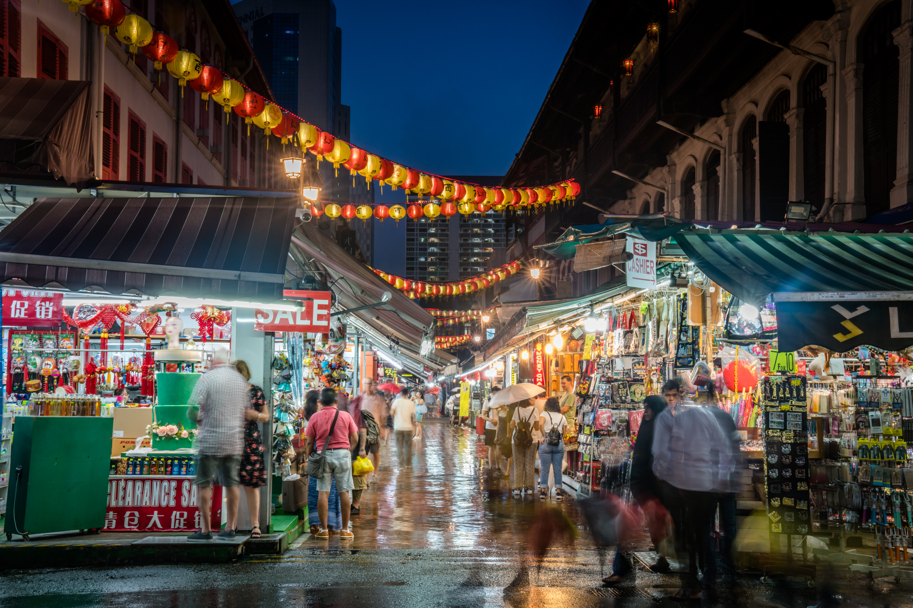
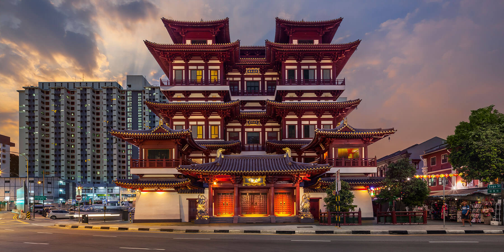
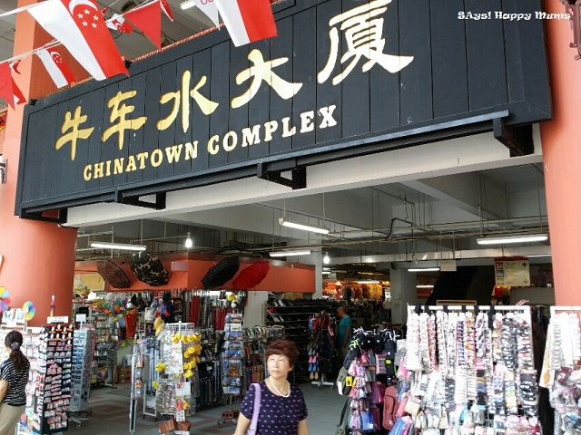
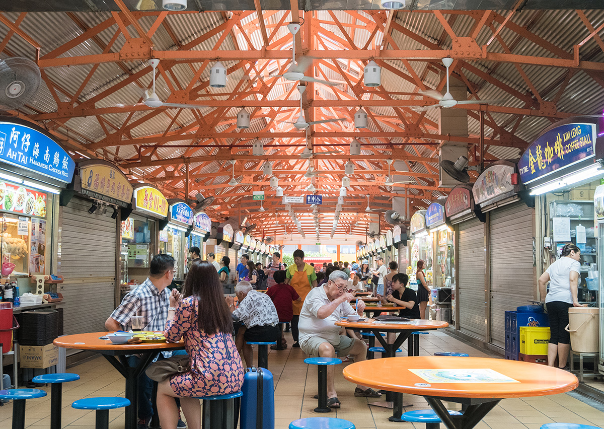

This website provides you information on the popular places in chinatown
Click on the table of contents to find out more!
Kreta Ayer district links Neil Road to New Bridge Road and Eu Tong Sen Street,
intersected by Keong Saik Road. Kreta Ayer Road was officially named in 1922.
Kreta Ayer is a part of the Chinatown Kreta Ayer Conservation Area and is home to many conserved shophouses.
HDB blocks, shops, and eating places also line this street.
To look for more information, click
here.
Telok Ayer district covers a long stretch that runs from Market Street to Anson Road
It was designated a Chinese district by Stamford Raffles and gained prominence in the 1820s,
serving as the landing site for early immigrants
Telok Ayer Street was named after Telok Ayer Bay, located at the foot of Mount Wallich.
To look for more information, click here.
Keong Saik/ Bukit Pasoh district is a conservation area also known as Bukit Pasoh Conservation Area
This area was given the conservation area status in 1989
Bukit Pasoh road located on the hill in the 1830s marked the western boundary of the colonial town
To look for more information, click here.
Chinatown Streets 
The market is mostly open during the day from around 10am, but it's most picturesque at dusk,
with
the lights shining brightly and the sound of hawkers tempting you to check out their wares.
Just strolling the evening streets is a wonderful experience.
The market starts to wind down around 8pm to 9pm,
but some stalls stay open a little later,
particularly those selling snacks and drinks.
Opening Hours: Daily from 9.30am to 8pm
Pagoda Street and Trengganu Street,
Singapore 050005
To find out more about Chinatown Streets,
Visit Chinatown Streets!
Buddha Relic Temple 
Located in the historic district of Chinatown, the Buddha Tooth Relic Temple & Museum's
richly designed interiors and comprehensive exhibits on Buddhist art
Built in 2007, the temple gets its name from what the Buddhists regard as the left canine tooth of Buddha
Opening Hours: Daily from 7am - 7pm
288 South Bridge Rd
Singapore 058840
To find out more about Buddha Relic Temple,
Visit
Buddha Relic Temple!
Chinatown Complex Food Centre

Conveniently located in the heart of Chinatown,
this food court is a great place to get local traditional dishes
with varied menus and cheap prices.
Opening Hours: Daily from 12pm - 7pm
Block 335 Smith Street
Singapore 050335
To find out more about Chinatown Food Complex, and Must-try stalls to eat
Visit
Chinatown Food Complex!
Maxwell Hawker Centre

One of the oldest hawker centres in Singapore,
Maxwell Road Food Centre stands at the corner of South Bridge Road and Maxwell Road
this food court is a great place to get local traditional dishes
Opening Hours: Daily from 8am - 2am
Address: 1 Kadayanallur St,
Singapore 069184
To find out more about Maxwell Hawker Centre, and Must-try stalls to eat
Visit
Maxwell Food Centre!
Click here
to open Google Maps